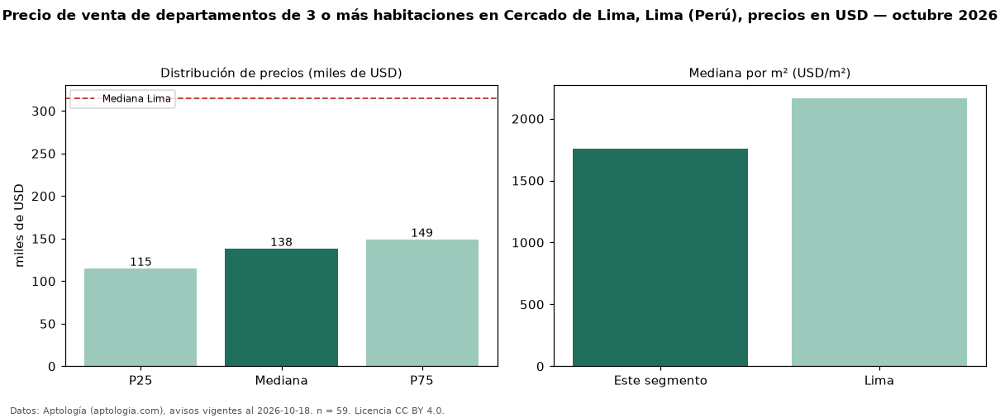

Precio de venta de departamentos de 3 o más habitaciones en Cercado de Lima, Lima (Perú), precios en USD — octubre 2026
Con 59 avisos vigentes, el precio mediano de departamentos de 3 o más habitaciones en venta en Cercado de Lima, Lima (Perú) es USD 138.090. Eso es 56 % por debajo de la mediana de Lima para departamentos de 3 o más habitaciones (USD 315.000). Por metro cuadrado, la mediana es USD 1.758/m² (n = 58 avisos con área), 19 % por debajo de Lima (USD 2.166/m²). Son 47 % de los 125 avisos de departamentos en venta de la zona, cuya mediana general es USD 122.029 (+13 %). El área mediana anunciada es 75 m². La mitad central de los avisos va de USD 114.858 a USD 148.912 (razón 1,3), una dispersión baja. Datos: Aptología (aptologia.com), CC BY 4.0 — https://www.aptologia.com/pe/venta/lima/cercado-de-lima. Archivos: PDF, CSV con las cifras y gráfica PNG.

| Avisos únicos | 59 |
|---|---|
| Percentil 25 | COP 114.858 |
| Mediana | COP 138.090 |
| Percentil 75 | COP 148.911 |
| Mediana por m² | COP 1.758 |
Fuente: avisos vigentes de portales inmobiliarios recopilados por Aptología, deduplicados (mínimo 30 avisos únicos por celda). Precios pedidos, no cerrados. Fecha: 2026-10-18.